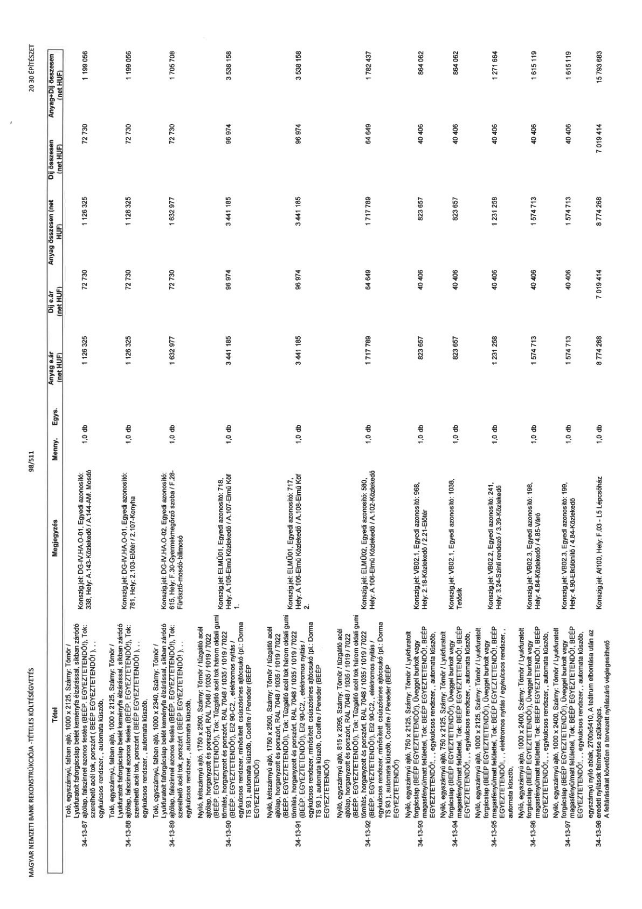

| Tétel | Megjegyzés | Menny. | Egys. | Anyag e.ár (net HUF) | Díj e.ár (net HUF) | Anyag összesen (net HUF) | Díj összesen (net HUF) | Anyag+Díj összesen (net HUF) |
|---|---|---|---|---|---|---|---|---|
| 34-13-87 | Toló, egyszárnyú, falban ajtó, 1000 x 2125, Szárny: Tömör / Lyukfuratolt forgácslap betét keményfa élzárással, síkban záródó ajtólap, falszínnel azonos festés (BEEP. EGYEZTETENDŐ!), Tok: szerelhető acél tok, porszórt ( BEEP EGYEZTETENDŐ!), ,, egykulcsos rendszer,, automata küszöb,; Konszig.jel: DG-IV.HA.O-01, Egyedi azonosító: 338, Hely: A.143-Közlekedő / A.144-AM. Mosdó | 1,0 | db | 1 126 325 | 72 730 | 1 126 325 | 72 730 | 1 199 056 |
| 34-13-88 | Toló, egyszárnyú, falban ajtó, 1000 x 2125, Szárny: Tömör / Lyukfuratolt forgácslap betét keményfa élzárással, síkban záródó ajtólap, falszínnel azonos festés (BEEP. EGYEZTETENDŐ!), Tok: szerelhető acél tok, porszórt ( BEEP EGYEZTETENDŐ!), ,, egykulcsos rendszer,, automata küszöb,; Konszig.jel: DG-IV.HA.O-01, Egyedi azonosító: 781, Hely: 2.103-Előtér / 2.107-Konyha | 1,0 | db | 1 126 325 | 72 730 | 1 126 325 | 72 730 | 1 199 056 |
| 34-13-89 | Toló, egyszárnyú, falban ajtó, 1000 x 2340, Szárny: Tömör / Lyukfuratolt forgácslap betét keményfa élzárással, síkban záródó ajtólap, falszínnel azonos festés (BEEP. EGYEZTETENDŐ!), Tok: szerelhető acél tok, porszórt ( BEEP EGYEZTETENDŐ!), ,, egykulcsos rendszer,, automata küszöb,; Konszig.jel: DG-IV.HA.O-02, Egyedi azonosító: 615, Hely: F.30-Gyermekmegőrző szoba / F.28-Fürdő-mosdó-bilimosó | 1,0 | db | 1 632 977 | 72 730 | 1 632 977 | 72 730 | 1 705 708 |
| 34-13-90 | Nyíló, kétszárnyú ajtó, 1750 x 2500, Szárny: Tömör / tűzgátló acél ajtólap, horganyzott és porszórt, RAL 7048 / 1035 / 1019 / 7022 (BEEP. EGYEZTETENDŐ!), Tok: Tűzgátló acél tok három oldali gumi tömítés, horganyzott és porszórt, RAL 7048 / 1035 / 1019 / 7022 (BEEP. EGYEZTETENDŐ!), EI2 90-C2,, elektromos nyitás / egykulcsos rendszer, minősített csúszósínes ajtócsukó (pl.: Dorma TS 93 ), automata küszöb, Coolfire / Peneder ( BEEP EGYEZTETENDŐ!); Konszig.jel: ELMÜ01, Egyedi azonosító: 718, Hely: A.106-Elmű Közlekedő / A.107-Elmű Kőf 1. | 1,0 | db | 3 441 185 | 96 974 | 3 441 185 | 96 974 | 3 538 158 |
| 34-13-91 | Nyíló, kétszárnyú ajtó, 1750 x 2500, Szárny: Tömör / tűzgátló acél ajtólap, horganyzott és porszórt, RAL 7048 / 1035 / 1019 / 7022 (BEEP. EGYEZTETENDŐ!), Tok: Tűzgátló acél tok három oldali gumi tömítés, horganyzott és porszórt, RAL 7048 / 1035 / 1019 / 7022 (BEEP. EGYEZTETENDŐ!), EI2 90-C2,, elektromos nyitás / egykulcsos rendszer, minősített csúszósínes ajtócsukó (pl.: Dorma TS 93 ), automata küszöb, Coolfire / Peneder ( BEEP EGYEZTETENDŐ!); Konszig.jel: ELMÜ01, Egyedi azonosító: 717, Hely: A.106-Elmű Közlekedő / A.108-Elmű Kőf 2. | 1,0 | db | 3 441 185 | 96 974 | 3 441 185 | 96 974 | 3 538 158 |
| 34-13-92 | Nyíló, egyszárnyú ajtó, 815 x 2095, Szárny: Tömör / tűzgátló acél ajtólap, horganyzott és porszórt, RAL 7048 / 1035 / 1019 / 7022 (BEEP. EGYEZTETENDŐ!), Tok: Tűzgátló acél tok három oldali gumi tömítés, horganyzott és porszórt, RAL 7048 / 1035 / 1019 / 7022 (BEEP. EGYEZTETENDŐ!), EI2 90-C2,, elektromos nyitás / egykulcsos rendszer, minősített csúszósínes ajtócsukó (pl.: Dorma TS 93 ), automata küszöb, Coolfire / Peneder ( BEEP EGYEZTETENDŐ!); Konszig.jel: ELMÜ02, Egyedi azonosító: 580, Hely: A.106-Elmű Közlekedő / A.102-Közlekedő | 1,0 | db | 1 717 789 | 64 649 | 1 717 789 | 64 649 | 1 782 437 |
| 34-13-93 | Nyíló, egyszárnyú ajtó, 750 x 2125, Szárny: Tömör / Lyukfuratolt forgácslap (BEEP EGYEZTETENDŐ!), Üveggel burkolt vagy magasfényű/matt felülettel, Tok: BEEP EGYEZTETENDŐ!, BEEP EGYEZTETENDŐ!, ,, egykulcsos rendszer,, automata küszöb,; Konszig.jel: VB02.1, Egyedi azonosító: 988, Hely: 2.18-Közlekedő / 2.21-Előtér | 1,0 | db | 823 657 | 40 406 | 823 657 | 40 406 | 864 062 |
| 34-13-94 | Nyíló, egyszárnyú ajtó, 750 x 2125, Szárny: Tömör / Lyukfuratolt forgácslap (BEEP EGYEZTETENDŐ!), Üveggel burkolt vagy magasfényű/matt felülettel, Tok: BEEP EGYEZTETENDŐ!, BEEP EGYEZTETENDŐ!, ,, egykulcsos rendszer,, automata küszöb,; Konszig.jel: VB02.1, Egyedi azonosító: 1038, Tetősík | 1,0 | db | 823 657 | 40 406 | 823 657 | 40 406 | 864 062 |
| 34-13-95 | Nyíló, egyszárnyú ajtó, 1000 x 2125, Szárny: Tömör / Lyukfuratolt forgácslap (BEEP EGYEZTETENDŐ!), Üveggel burkolt vagy magasfényű/matt felülettel, Tok: BEEP EGYEZTETENDŐ!, BEEP EGYEZTETENDŐ!, ,, egykulcsos rendszer,, automata küszöb,; Konszig.jel: VB02.2, Egyedi azonosító: 241, Hely: 3.24-Szinti rendező / 3.39-Közlekedő | 1,0 | db | 1 231 258 | 40 406 | 1 231 258 | 40 406 | 1 271 664 |
| 34-13-96 | Nyíló, egyszárnyú ajtó, 1000 x 2400, Szárny: Tömör / Lyukfuratolt forgácslap (BEEP EGYEZTETENDŐ!), Üveggel burkolt vagy magasfényű/matt felülettel, Tok: BEEP EGYEZTETENDŐ!, BEEP EGYEZTETENDŐ!, ,, egykulcsos rendszer,, automata küszöb,; Konszig.jel: VB02.3, Egyedi azonosító: 198, Hely: 4.84-Közlekedő / 4.85-Váró | 1,0 | db | 1 574 713 | 40 406 | 1 574 713 | 40 406 | 1 615 119 |
| 34-13-97 | Nyíló, egyszárnyú ajtó, 1000 x 2400, Szárny: Tömör / Lyukfuratolt forgácslap (BEEP EGYEZTETENDŐ!), Üveggel burkolt vagy magasfényű/matt felülettel, Tok: BEEP EGYEZTETENDŐ!, BEEP EGYEZTETENDŐ!, ,, egykulcsos rendszer,, automata küszöb,; Konszig.jel: VB02.3, Egyedi azonosító: 199, Hely: 4.90-Előkülönítő / 4.84-Közlekedő | 1,0 | db | 1 574 713 | 40 406 | 1 574 713 | 40 406 | 1 615 119 |
| 34-13-98 | Nyíló, egyszárnyú ajtó, 1000 x 2400, Szárny: Tömör / Lyukfuratolt forgácslap (BEEP EGYEZTETENDŐ!), Üveggel burkolt vagy magasfényű/matt felülettel, Tok: szerelhető acél tok, porszórt ( BEEP EGYEZTETENDŐ!), ,, egykulcsos rendszer,, automata küszöb,; Konszig.jel: Af100, Hely: F.03 - L5 lépcsőház. A feltárásokat követően a tervezett nyílászáró véglegesíthető | 1,0 | db | 8 774 268 | 7 019 414 | 8 774 268 | 7 019 414 | 15 793 683 |
